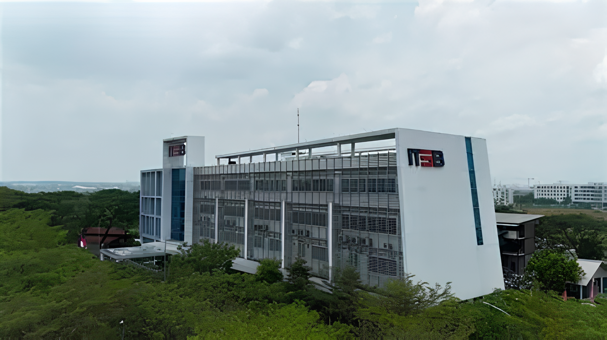

Visual Campus Journey
Foto gedung, preview area, hotspot, dan video kampus membantu pengunjung memahami ITSB dengan cepat.
Buka hotspot
Connecting ITSB Digital Campus to Sinar Mas Innovation Ecosystem
ITSB Digital Campus Experience
Platform interaktif untuk mengenalkan kampus ITSB secara visual, terarah, dan mudah dipahami melalui virtual campus, ChatBot, gamification, dashboard data, dan jalur registrasi.
Immersive Digital Campus Experience
IDCE membantu calon mahasiswa memahami suasana kampus, aktivitas akademik, program PMB, dan lokasi ITSB melalui pengalaman yang lebih hidup. Semua fitur dibuat saling terhubung agar perjalanan pengunjung bergerak dari eksplorasi menuju registrasi.
Live Journey Mode
System Status
Why It Matters
Calon mahasiswa membutuhkan informasi yang jelas, visual, dan mudah diakses. IDCE menyajikan pengenalan kampus, aktivitas, data platform, dan pendaftaran dalam satu jalur yang rapi agar proses pengambilan keputusan lebih mudah.
Foto gedung, preview area, hotspot, dan video kampus membantu pengunjung memahami ITSB dengan cepat.
Buka hotspotChatBot menjawab pertanyaan calon mahasiswa tentang kampus, PMB, lokasi, dan fitur IDCE.
Coba chatbotDashboard membaca funnel, minat fitur, dan performa platform digital ITSB dari data publik.
Lihat dataSetelah eksplorasi, pengunjung diarahkan ke form minat dan portal PMB resmi ITSB.
Daftar minatExperience Modules
Setiap modul mengubah isi preview di sampingnya. Alur ini membuat pengunjung tidak hanya membaca, tetapi aktif memilih pengalaman kampus yang ingin dilihat.
Campus Mapping Active
Pengunjung dapat melihat suasana kampus ITSB melalui visual gedung, alur eksplorasi, dan tombol interaktif yang mengarah ke bagian penting.
Campus Hotspot Explorer
Hotspot membantu calon mahasiswa memahami fungsi area kampus secara langsung. Fitur ini bekerja seperti peta ringan yang menghubungkan visual gedung dengan informasi akademik.
Hotspot Active
Pusat identitas kampus yang menjadi titik awal pengenalan lingkungan akademik, layanan informasi, dan arah eksplorasi digital ITSB.
Live Classroom Simulation
Bagian ini memberi gambaran tentang kelas, diskusi, project-based learning, dan kegiatan akademik. Klik kartu untuk membuka detail singkat tiap aktivitas.
Kelas Sedang Berlangsung
Calon mahasiswa melihat contoh suasana pembelajaran, diskusi, dan pemanfaatan data dalam lingkungan akademik.
Student Life Story
Pilih story untuk melihat narasi singkat tentang kehidupan mahasiswa, kolaborasi, dan kegiatan kampus. Bagian ini membantu calon mahasiswa membayangkan pengalaman mereka di ITSB.
Interactive Activity Feed
Klik aktivitas untuk menandai bahwa calon mahasiswa sudah melihat simulasi kegiatan. Dalam penerapan kampus, feed ini dapat dihubungkan dengan agenda PMB dan kalender kegiatan.
AI Campus Guide
ChatBot ini memakai endpoint /api/ . Saat deploy ke Vercel, isi environment variable _API_KEY agar pertanyaan user diproses oleh API.
Gamification Mission
Calon mahasiswa mendapatkan poin ketika membuka fitur penting. Sistem ini membuat perjalanan lebih menarik dan membantu mereka memahami semua bagian utama website.
Explorer Score
0/12 misi selesai
Mulai eksplorasi dengan membuka fitur pertama.
Data Science Insight Dashboard
Bagian ini menunjukkan unsur Data Science. Data diambil dari platform publik seperti website ITSB, portal PMB, Instagram, dan YouTube. Angka sosial dapat berubah sesuai pembaruan platform.
Conversion Funnel
Feature Interest
Public Platform Snapshot
YouTube Campus Preview
Pengunjung dapat menonton video profil ITSB tanpa harus keluar dari website.
Integrated Digital Marketing
IDCE menghubungkan visual kampus, ChatBot, dashboard, misi, video, dan pendaftaran. Jadi website ini tidak berhenti sebagai tampilan, tetapi menjadi alur pengalaman yang aktif.
Pengunjung melihat kampus, hotspot, video, dan aktivitas.
Pengunjung bertanya ke ChatBot untuk memahami informasi.
Data platform ditampilkan untuk mendukung keputusan berbasis insight.
Pengunjung diarahkan ke form minat dan portal PMB resmi.
Registration Funnel
Form ini menjadi tahap akhir perjalanan pengguna. Data dikirim melalui FormSubmit ke email tujuan yang sudah kamu gunakan sebelumnya.
Campus Location
Institut Teknologi Sains Bandung berada di Kota Deltamas Lot-A1 CBD, Jl. Ganesha Boulevard No.1, Pasirranji, Cikarang Pusat, Kabupaten Bekasi, Jawa Barat 17530.
Buka lokasi kampus melalui Google Maps atau lanjutkan ke portal PMB resmi ITSB.